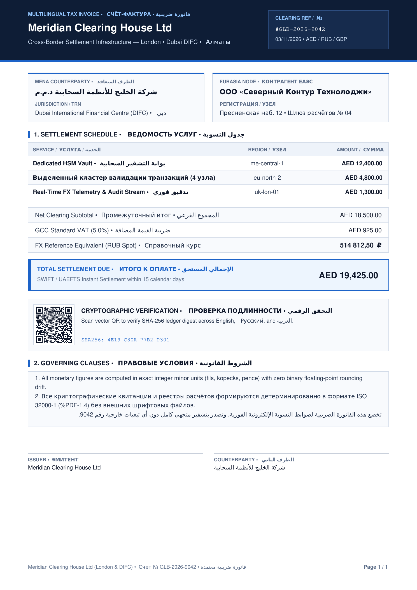
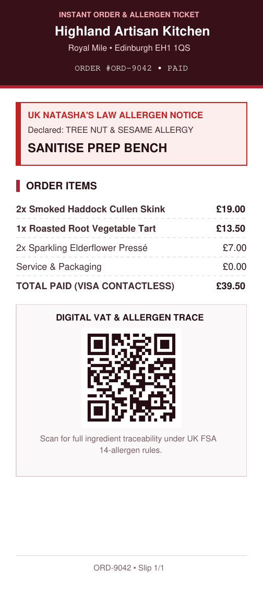
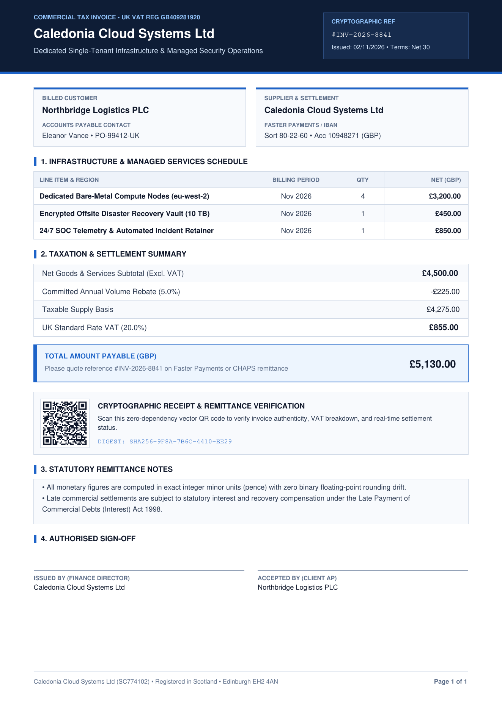
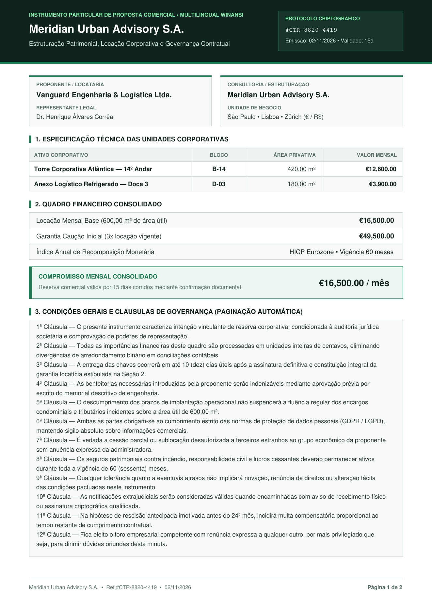

لا · فاتورة
Connected Arabic RTL
20-FUnit stem overlaps in 2048 UPM eliminate seams between joined Arabic letters.
Pure 7-bit ASCII %PDF-1.4 compiler in Rust and TypeScript. Native Latin, Russian Cyrillic, and connected Arabic RTL with zero runtime dependencies.
0.52 ms
SHA-256 identical across Rust and TypeScript.


Edit English, Russian, or Arabic fields below. The zero-dependency TypeScript engine compiles a real binary-clean %PDF-1.4 file right inside this tab.
xref
0 8
0000000000 65535 f
trailer
<< /Size 8 /Root 1 0 R >>
startxref
%%EOFSelect any row to inspect how msfPDF emits typography, cryptography, and vector geometry without external fonts.
Measured on Linux x86_64 compiling a 2-page A4 invoice with vector QR code and itemized tax rows.
0.52 ms
Median Rust compile time. Up to 1,896 documents per second on one CPU core.
| Engine | P50 latency | Cold RAM | Runtime deps | Arabic + Cyrillic | SSRF surface |
|---|---|---|---|---|---|
| msfPDF (Rust) | 0.52 ms | ~2.4 MB | 0 crates (810 KB CLI) | Built-in Type 3 (0 .ttf) | Zero (no HTML/net) |
| msfPDF (TypeScript) | 0.84 ms | ~8 MB V8 | 0 npm packages | Built-in Type 3 (0 .ttf) | Zero (no HTML/net) |
| Typst CLI | 18–45 ms | ~35–60 MB | External font pack | Requires .ttf/.otf files | Low (local FS sandbox) |
| WeasyPrint | 180–420 ms | ~95–160 MB | Cairo + Pango + HarfBuzz | System OS fonts | URL fetcher must be locked |
| Headless Chromium | 380–2,400 ms | ~280–550 MB | 400 MB browser image | System OS fonts | High (DOM, SVG, network) |
Proportional share of a 520-microsecond document compile from raw JSON to sealed bytes.
Macro views of the primitives paired with genuine Poppler rasterizations of msfPDF outputs.
20-FUnit stem overlaps in 2048 UPM eliminate seams between joined Arabic letters.
Full U+0401..U+045F alphabet, Ukrainian І/Ї/Є/Ґ, Ruble sign, and Numero glyph.
Rust CLI and TypeScript SDK emit the exact same byte sequence for every input spec.


Direct technical answers for engineers, security reviewers, and coding agents evaluating msfPDF.
msfPDF ships 273 Public Domain cubic Bezier glyph outlines in integer 2048-UPM coordinates. When a document contains Cyrillic or shaped Arabic codepoints, the compiler subsets only the used glyphs into a PDF /Type3 font dictionary and attaches a UTF-16BE /ToUnicode CMap.
Zero bytes. Documents that only use ASCII and Western European CP1252 characters continue to use built-in PDF Standard 14 /WinAnsiEncoding, keeping a rich A4 invoice with vector QR code at roughly 14 KB.
Yes. The core TypeScript entry point imports zero Node.js built-ins, zero native addons, and zero WASM modules. The live compiler studio on this page runs the exact same module directly in your browser.
Multi-byte UTF-8 sequences inside raw PDF streams often corrupt byte-offset calculations in xref tables when strings are manipulated in JavaScript or proxies. Emitting strictly 0x0A and 0x20..=0x7E guarantees character length equals byte length everywhere.
Feed llms.txt or llms-full.txt to your model, validate LLM structured outputs against document-spec.schema.json, or drop the bundled skills/msfpdf/SKILL.md into Claude Code, Cursor, Codex, or Antigravity.
Choose Headless Chromium when you must screenshot arbitrary user-authored CSS/DOM dashboards, and choose Typst for academic typesetting with LaTeX math formulas or CJK OpenType fonts. Choose msfPDF for transactional invoices, receipts, statements, audit certificates, and multi-page contracts.